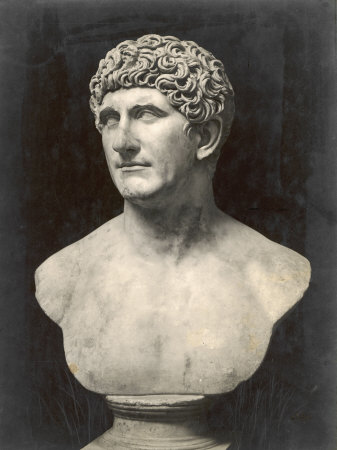

| |
Mark Antony
Mark Antony was born in Rome in 83 B.C.He was a Roman military commander and politician. he was a loyal friend of his mother's cousin Julius Caesar and the son of an ineffective praetor (military commander) and grandson of a noted consul and orator. After a largely misspent youth, he was sent east as a cavalry officer, where he won important victories in Palestine and Egypt.
In 41 B.C. Antony had an affair with the queen of Egypt Cleopatra, who had been Caesar's lover in the last years of his life. Cleopatra gave birth to twins, Alexander Helios and Cleopatra Selene, but then Antony was told to return to Rome to deal with the aftermath of his wife and brother-in-law’s failed rebellion against Octavian. The Senate pressing the recently widowed Antony to marry Octavian's sister Octavia Minor in 40 B.C.

Mark Antony
For
more information please visit :
More Information about Mark Antony from Wikipedia
| |